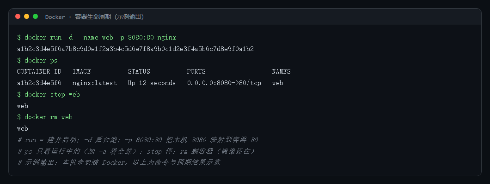
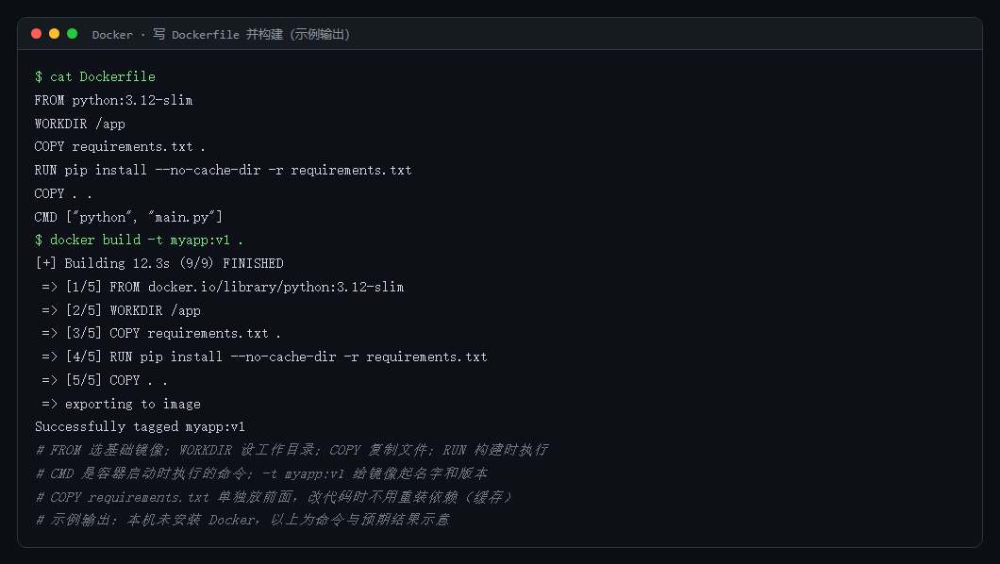
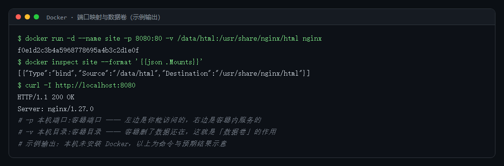
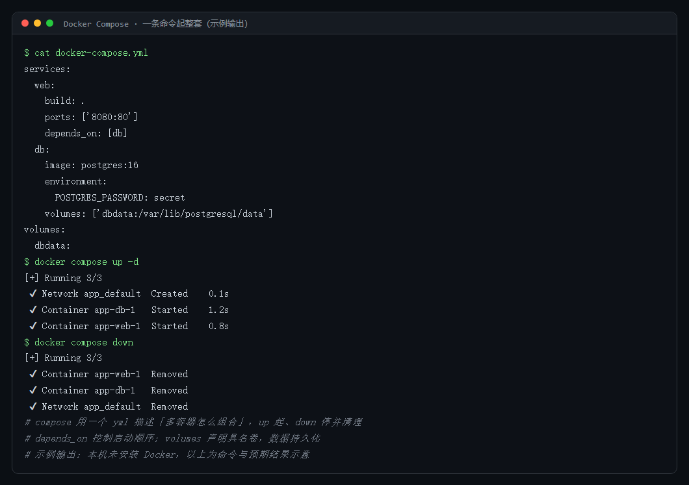

Docker 入门
⚠️ 你这台机器没有安装 Docker，所以本章的终端图是示例输出（图中已标注），不是真实截图。命令和概念是准确的。
📌 想让我用真实截图重做这一章？装好 Docker Desktop 后告诉我，我重新生成。
0 镜像和容器到底是什么
最容易搞混的一对概念。用「代码」和「进程」来类比就通了。
| Docker 镜像 image | Docker 容器 container | |
|---|---|---|
| 类比 | 一个装好的软件安装包 / 类（class） | 跑起来的程序 / 实例（instance） |
| 状态 | 只读、不变 | 可读写、会跑 |
| 数量关系 | 一个镜像可以起多个容器 | 每个容器有自己的文件改动 |
| 命令 | docker build / docker pull | docker run |
🧠 一句话：镜像 = 模板，容器 = 用模板跑出来的实例。
容器删了，镜像还在；镜像删了，以它为基础的容器也起不来。
容器删了，镜像还在；镜像删了，以它为基础的容器也起不来。
1 容器生命周期
四个命令覆盖 90% 的操作：run / ps / stop / rm。

示例输出（本机未安装 Docker）
| 命令 | 作用 | 最常用的参数 |
|---|---|---|
docker run | 建并启动容器 | -d 后台、--name 起名、-p 端口 |
docker ps | 看运行中的容器 | -a 连已停止的也看 |
docker logs | 看容器日志 | -f 持续跟踪 |
docker exec -it | 进容器里敲命令 | docker exec -it web bash |
docker stop / rm | 停 / 删容器 | rm -f 强制删 |
🔁 记住顺序：
run 起 → ps 看 → logs 查 → exec 进 → stop 停 → rm 删。2 Dockerfile 与构建
Dockerfile = 怎么把你的应用打包成镜像的说明书。

示例输出（本机未安装 Docker）
| 指令 | 意思 |
|---|---|
FROM | 基于哪个镜像（必须第一行） |
WORKDIR | 设置工作目录，之后命令都在这里执行 |
COPY | 把本机文件复制进镜像 |
RUN | 构建时执行（装依赖） |
CMD | 启动时执行（跑程序） |
EXPOSE | 声明用哪个端口（只是文档作用） |
⚡ 缓存技巧：先
这样你改代码时，依赖那一层不用重装，构建快几十倍。
COPY requirements.txt 再 RUN pip install，最后才 COPY . .。这样你改代码时，依赖那一层不用重装，构建快几十倍。
⚠️
RUN 和 CMD 的区别是新手第一大坑：RUN 在 build 阶段跑（打镜像时），CMD 在 run 阶段跑（启动容器时）。3 端口映射与数据卷
两个「为什么」：为什么容器里的服务我访问不到？为什么容器删了数据就没了？

示例输出（本机未安装 Docker）
1
端口：-p 8080:80 = 本机 8080 → 容器 80。左边是你访问的，右边是容器里的。写反了就访问不到。
2
数据卷：-v 本机目录:容器目录。容器是可丢弃的，数据必须放在卷里才能留下来。
3
验证：curl -I http://localhost:8080 返回 200 就通了。
🚫 常见错误：容器里服务监听
127.0.0.1。容器内的 localhost 是容器自己，外部访问不到。要让服务监听 0.0.0.0。4 Compose：一条命令起整套
真实项目往往是「应用 + 数据库 + Redis」。一个个 docker run 太累，用 compose 写成一个文件。

示例输出（本机未安装 Docker）
1
docker-compose.yml 里每个 services: 下的条目 = 一个容器。
2
docker compose up -d 一次拉起全部；down 全部停止并清理网络。
3
服务之间可以直接用服务名当主机名互相访问（比如 web 里连 db:5432），不用记 IP。
📦
depends_on 只保证启动顺序，不保证「数据库已经能连」。真要等就写健康检查 healthcheck。5 新手必踩的坑
① 端口写反。
-p 80:8080 是「本机 80 → 容器 8080」。记法：左本机右容器。② 数据没放卷里。容器一删数据就没了，数据库尤其致命。
③ 用 latest 标签。
nginx:latest 今天和明天可能不是一个东西，生产要写明确版本，如 nginx:1.27。④ 镜像越做越大。用
-slim / alpine 基础镜像，加 .dockerignore 排除 node_modules、.git。⑤ Windows 上要先装 WSL2。Docker Desktop 依赖它，装之前先
wsl --install 并重启。✅ 学习路径建议：先只玩
run/ps/logs/exec 五个命令 → 再写 Dockerfile → 最后上 compose。别一上来就看 Kubernetes。